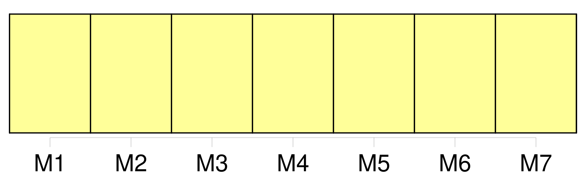
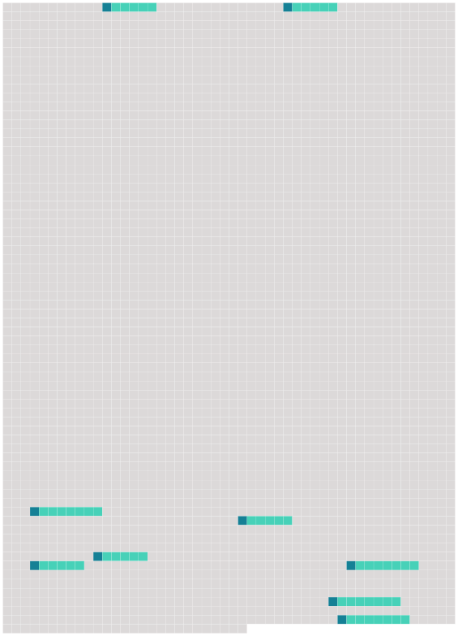

Longueur nb maillons : 9 mentions |
  |
Article X : Comité chargé de l'examen de l'application [des mesures adoptées par la Commission]
La Commission établit un comité chargé de l'examen de l'application [des mesures adoptées par la Commission] , composé des représentants désignés à cet effet par chaque membre de la Commission, qui peuvent être accompagnés des experts et conseillers dont ces membres jugent la présence opportune. [73 phrases]
Chaque partie fournit à la Commission toutes les informations nécessaires à la réalisation de l'objectif de la présente convention, y compris les informations statistiques et biologiques et celles relatives à ses activités de pêche dans la zone de la convention, et met à disposition de la Commission les informations concernant les actions entreprises pour appliquer [les mesures adoptées conformément à la présente convention] , lorsque la Commission le requiert et en tant que de besoin, sous réserve des dispositions de l'article XXII de la présente convention et conformément aux règles de procédure élaborées et adoptées par la Commission. [1 phrases]
Chaque partie doit, dans les meilleurs délais, par l'intermédiaire du directeur, informer le comité chargé de l'examen de l'application [des mesures adoptées par la Commission] établi conformément aux dispositions de l'article X de la présente convention : [1 phrases]
Chaque partie : [1 phrases]
Chaque partie prend des mesures afin de garantir que les navires opérant dans les eaux relevant de sa juridiction nationale satisfont à la présente convention et [aux mesures adoptées en vertu de celle -ci] [5 phrases]
Chaque partie, à la demande de la Commission ou d'une quelconque autre partie et, lorsque des informations pertinentes selon lesquelles un navire relevant de sa juridiction a exercé des activités allant à l'encontre [des mesures adoptées conformément à la présente convention] lui ont été communiquées, doit mener une enquête approfondie et, le cas échéant, agir conformément à sa législation nationale et informer, dans les meilleurs délais, la Commission et, s'il y a lieu, l'autre partie, des conclusions de son enquête et des actions entreprises. [1 phrases]
Chaque partie applique, conformément à sa législation nationale et d'une manière compatible avec le droit international, des sanctions d'une gravité suffisante pour garantir efficacement le respect des dispositions de la présente convention et [des mesures adoptées en vertu de celle -ci] et priver les contrevenants des bénéfices de leurs activités illégales, y compris, le cas échéant, le rejet, la suspension ou le retrait de leur autorisation de pêcher. |
 |
La ressource peut être téléchargée sur la page Ortolang
Si vous avez des questions ou vous voyez des erreurs, merci d'envoyer un mail à silvia.federzoni89@gmail.com
Site développé par S. Federzoni (contact)